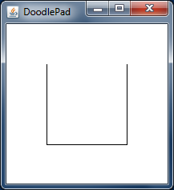

A Path is a complex shape made up of various types of curves and straight lines. Unlike other Shapes in the DoodlePad library, a Path is assembled incrementally by adding line segments and curves to form the Shape outline. This is done a manner similar to the way we might draw a shape with a pencil. A path may even be open, meaning the final Shape is not required to be enclosed by a continuous line covering all sides.
Consider the shape on the right, which looks like a Rectangle missing its top side. Previously, when we created a basic Rectangle object, we made use of a constructor that created a Rectangle shape having all four sides. To create the Path as shown in the figure, we must take a different approach.
To create any Path shape we build up the shape incrementally by adding one side at a time. We start by creating an empty Path object (having no sides) and then invoke a sequence of its methods to add new sides, one at a time. When finished, we may choose to close the Path Shape outline with a final line segment, or leave it open. The listing below for the PathDemo1 class is a small program that creates the previous Path object in code using DoodlePad.
import doodlepad.*;
public class PathDemo1 {
public static void main(String[] args) {
Path p1 = new Path(); // 1) Create an empty Path object
p1.moveTo(150.0, 50.0); // 2) Move the virtual pencil to (150, 50)
p1.lineTo(150.0, 150.0); // 3) Draw a line down to (150, 150)
p1.lineTo( 50.0, 150.0); // 4) Add a line over to (50, 150)
p1.lineTo( 50.0, 50.0); // 5) Add a line up to (50, 50)
}
}
Creating the previous Path object required five lines of code. Recall that the DoodlePad drawing model sets the default location of the coordinate system origin to the upper left corner of the drawing window. Following is a more detailed description of the program.
After creating a Path object, its moveTo(…), lineTo(…), and closePath() methods may be used to create any shape with multiple line segments as sides, open or closed.
It is also possible to add curved side to a Path object. Two types or curved sides are permitted: one based on a quadratic curve, and another based on a Bézier spline.
To add a side to a Path made up of a segment from a quadratic curve, use the Path object's quadTo(…) method. quadTo(…) takes four double parameters instead of two, as was the case with lineTo(…). The first two quadTo(…) parameters define the side's control point, and the second two define its endpoint. As usual, the side starts at the current point coordinates.
The following listing for the PathDemo2 class is identical to PathDemo1 only the second side is changed from from a line to a quadratic curve segment. Notice that in line 4 the quadTo(…) method takes four numeric parameters. The endpoint of (50.0, 150.0) is preceded with a control point of (100.0, 200.0), which defines how the side will curve.
import doodlepad.*;
public class PathDemo2 {
public static void main(String[] args) {
Path p2 = new Path(); // 1) Create an empty Path object
p2.moveTo(150.0, 50.0); // 2) Move your pencil to (150, 50)
p2.lineTo(150.0, 150.0); // 3) Draw a line down to (150, 150)
// 4) Add a quadratic segment over to (50, 150)
p2.quadTo(100.0, 200.0, 50.0, 150.0);
p2.lineTo( 50.0, 50.0); // 5) Add a line up to (50, 50)
p2.closePath(); // 6) Close the Path.
}
}
To illustrate how the control point of the quadTo(…) method impacts the shape of the quadratic segment making up the bottom of the Path, have a look at the interactive widget to the right. The Path shape outlined by the black line is the shape that is drawn by the code in the PathDemo2 sample listing. Gray boxes represent the side endpoints and the red box is the control point for the curved side. The dashed line shows the relationship between the control point of the curved side and its endpoints. The coordinates of the control point are printed at the bottom of the widget.
The boxes in the widget are draggable using your mouse. Move the position of each box to see how it affects the Path shape outline. Of particular interest is the red box representing the control point. Click and drag this box to see how the shape of the side changes. Also note the value of the control point and how it relates to the shape of the side. Dashed lines between the control point and the side's endpoints are tangent to the curved segment at its endpoints.
Curved sides of a Path shape may be more complex than a segment of a quadratic curve. Sides may be made up of a Bézier spline, which requires two control points instead of one. In the following listing for PathDemo3 a Path is created with a Bézier spline as the bottom side.
import doodlepad.*;
public class PathDemo3 {
public static void main(String[] args) {
Path p3 = new Path(); // 1) Create an empty Path object
p3.moveTo( 150.0, 50.0); // 2) Move your pencil to (150, 50)
p3.lineTo( 150.0, 150.0); // 3) Draw a line down to (150, 150)
// 4) Add a bezier spline over to (50, 150)
p3.curveTo(100.0, 200.0, 100.0, 100.0, 50.0, 150.0);
p3.lineTo( 50.0, 50.0); // 5) Add a line up to (50, 50)
p3.closePath(); // 6) Close the Path.
}
}
To add a side composed of a Bézier spline to a Path object, use the curveTo(…) method of Path, which can be found in the listing on line 4. The curveTo(…) method takes six parameters. The first two arguments make up the coordinates of the first control point. The second two arguments make up the coordinates for the second control point. Finally, the last two arguments are used for endpoint coordinates of the side being added.
Once again, to illustrate how these control points impact the shape of the Path side added with the curveTo(…) method, have a cose look at the accompanying interactive widget. In this case the first control point is outlined in red, and the second is outlined in green. The boxes in this widget are interactive; click and drag them to get a sense for how the shape of the side added with curveTo(…) changes with the position of the associated control points. The first control point governs the shape of start of the curved side and the second control point governs the shape of the end of the curved side. The coordinates of both control points are drawn at the bottom of the widget.
Path objects inherit all methods from the Shape class in DoodlePad. In particular, a Path may be moved, resized and styled in a manner identical to any of the other Shape subclasses.
The HeartPath class in the following listing creates a Path in the shape of an iconic heart. The image on the right shows what this DoodlePad program draws when run. The heart Path itself is made up of two quadratic curve segments, one for each side. These two sides are defined on lines 1 and 2 in the listing using the quadTo(…) method. The different control points for each side are selected strategically in order to give the Path its shape. After the Path is defined, standard fill and stroke commands are used to fill the Path with a pure red and prevent it from drawing an outline.
import doodlepad.*;
public class HeartPath {
public static void main(String[] args) {
// Create heart-shaped Path
Path h = new Path();
h.moveTo(100.0, 70.0);
h.quadTo( 10.0, 25.0, 100.0, 150.0); // 1) Left side of heart
h.quadTo(190.0, 25.0, 100.0, 70.0); // 2) Right side of heart
h.closePath();
// Set fill color and disable stroke
h.setFillColor(255, 0, 0); // 3) Fill with red
h.setStroked(false); // 4) Do not draw outline
}
}
All standard inherited Shape methods may be invoked on Path objects. For example, it is possible to move a Path using the setX(…), setY(…), setLocation(…), setCenter(…) and translate(…) methods. A path may be resized using the setWidth(…), setHeight(…) and scale(…) methods. It may be rotated with the rotate(…) method and it will even respond to all mouse events in a pixel-perfect manner, no matter how many or the shape of the sides used to construct the Path.